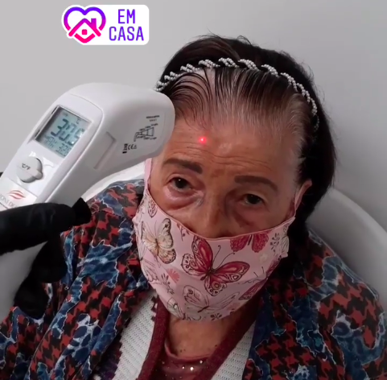

Atuamos há mais de 30 anos no mercado, cuidando da saúde e do bem-estar das pessoas. Oferecemos tratamentos estéticos personalizados e atenção à saúde dos pés, incluindo calosidades, alterações na pisada e outras necessidades.
01 Tratamentos personalizados02 Atendimento domiciliar03 Atenção especializada a idosos
AMOR E RESPEITO
Cuidado na terceira idade.
Atendimento em casas de repouso, ILPIs, asilos, clínicas e residências geriátricas. Nossa equipe vai até a instituição para um dia de cuidado aos pacientes, com atenção à saúde, à beleza e à autoestima.
Como funciona?
O responsável combina a data, informa os procedimentos desejados e o número de pacientes. Assim, organizamos profissionais, equipamentos e materiais. Esses atendimentos geralmente acontecem às segundas ou terças-feiras, conforme disponibilidade.
ATENDIMENTO EM INSTITUIÇÕESCuidado que vai até você

ATENDIMENTO DOMICILIARAcolhimento, onde você estiver
NO CONFORTO DA SUA CASA
Atendimento domiciliar.
Cuidados residenciais para quem busca praticidade, privacidade ou tem restrições de mobilidade. Levamos os materiais e equipamentos necessários para os procedimentos combinados.
Como funciona?
Entre em contato para combinar dia, horário e procedimentos. Além do valor dos serviços, há uma taxa de deslocamento, informada no agendamento.
Valores conforme o material fornecido pela clínica. Confirme condições e disponibilidade no agendamento.
NOSSA CLÍNICA EM MOVIMENTO
O cuidado acontece nos detalhes.
Explore os registros, procedimentos e materiais da clínica. Escolha um vídeo para assistir com controles de reprodução.
13 registros disponíveis
QUEM JÁ CUIDOU, RECOMENDA
Experiências compartilhadas.
“
Atendimento muito cuidadoso. Me senti segura desde a avaliação e saí sem o incômodo que sentia há semanas.
Mariana S. · Depoimento publicado no site original da clínica.
DÚVIDAS FREQUENTES
Informação também é cuidado.
O tratamento de podologia dói? +
A equipe avalia cada caso e utiliza técnicas e instrumentos para minimizar o desconforto. Converse sobre sua sensibilidade antes do procedimento.
Com que frequência devo retornar? +
A frequência é definida na avaliação, conforme suas necessidades e o acompanhamento indicado pela equipe.
Como funciona a primeira consulta facial? +
A equipe avalia a pele, os hábitos e seus objetivos para indicar o protocolo de cuidado adequado.
Preciso agendar previamente? +
Sim. O atendimento é realizado exclusivamente com hora marcada.
UM TEMPO SÓ SEU
Seu próximo momento de cuidado começa aqui.
Escolha sua área de interesse e prepare uma mensagem para a equipe.
WhatsApp: (48) 99152-0543 ↗ Av. Presidente Kennedy, 698 · Sala 437 Campinas · São José · CEP 88101-000 Segunda a sábado, das 9h às 19h. Atendimento somente com hora marcada.
Pagamento: dinheiro, Pix, cartão de crédito ou débito. Mastercard, Visa, Elo, Hipercard, Hiper, American Express, Diner’s Club, Cabal e Banri Compras.